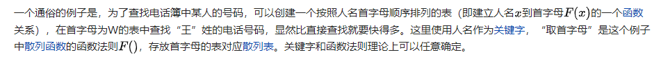
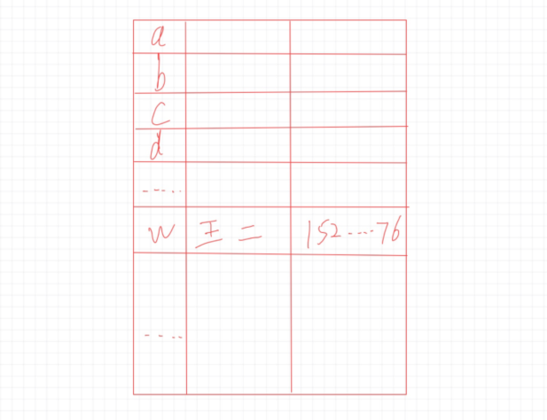
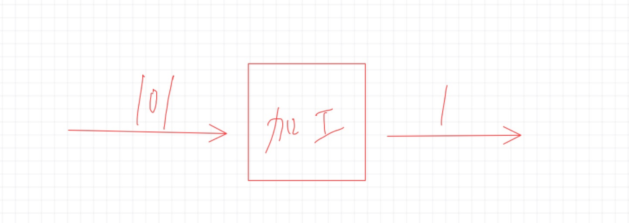
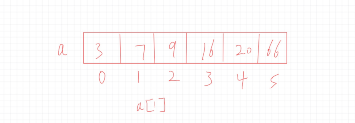
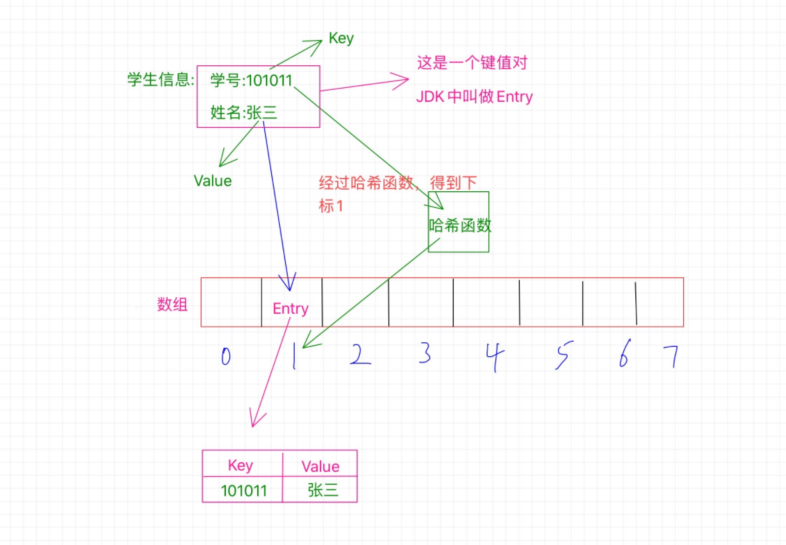
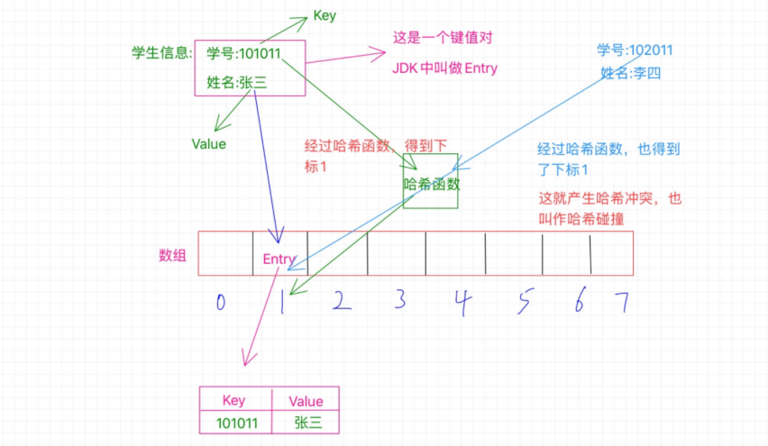
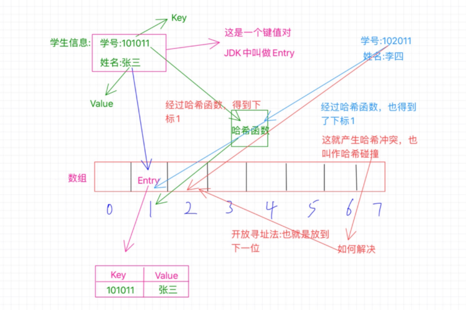
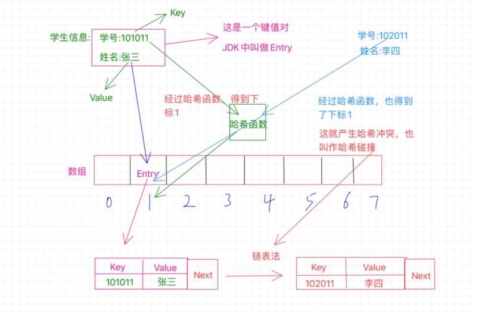

哈希表是个啥？
小白： 庆哥，什么是哈希表？这个哈希好熟悉，记得好像有HashMap和HashTable之类的吧，这是一样的嘛？😊
庆哥： 这个哈希确实经常见😂，足以说明它是个使用非常频繁的玩意儿，而且像你说的HashMap和HashTable之类的与哈希这个词肯定是有关系的，那哈希是个啥玩意啊，这个咱们还是得先来搞明白啥是个哈希表。😎
我们看看百科解释吧：
散列表（Hash table，也叫哈希表），是根据键（Key）而直接访问在内存存储位置的数据结构。也就是说，它通过计算一个关于键值的函数，将所需查询的数据映射到表中一个位置来访问记录，这加快了查找速度。这个映射函数称做散列函数，存放记录的数组称做散列表。
怎么样？看到这个，你知道哈希表是什么了嘛？
小白： 我之前是对哈希表一窍不通啊，不过看了这个百科的解释，我知道如下这些关于哈希表的简单知识点：
1、哈希表其实也叫散列表，两个是一个玩意，英文是Hash Table
2、哈希表是一个数据结构
这两个概念是比较清晰的，至于其他的说什么映射函数叫做散列函数，存放记录的数组叫做散列表这个就有点模糊了，尤其说存放记录的数组称为散列表，那意思是哈希表是个数组？🤣
庆哥： 首先你说的很清晰的两点说的是很准确的，哈希表也叫做散列表，这只不过是叫法而已，英文单词是Hash table，看到这个英文单词基本上就能猜到，哈希表其实就是直接根绝英文单词音译过来的，至此你应该知道了啥是哈希了吧，对于另外一点，那就很重要了，那就是哈希表其实是一种数据结构。
要知道数据结构有很多中，每一种都有各自的特点，那么哈希表既然也是一种数据结构，那它有什么特点呢？按照百科的解释，我们大致能知道：可以根据一个key值来直接访问数据，因此查找速度快
对了，你知道最基本的几个数据结构中，哪个的查询效率是最高的嘛？
小白： 据我所知，应该是数组吧，我们可以直接使用数组下标来访问数据，因此查询效率是很高滴😁
庆哥： 对，非常对，哈希表其实本质上就是一个数组 。
小白： 那为啥还叫哈希表呢？🤣，哈希表肯定有啥特别的吧，为啥本质上是一个数组呢？
庆哥： 必须滴啊，哈希表本质上是个数组，只能说它的底层实现是用到了数组，简单点说，在数组的这个基础上再捯饬捯饬，加工加工，变得更加有特色了，然后人家就自立门户，叫哈希表😂
小白： 这是咋个回事啊🤣
庆哥： 为什么说哈希表的本质是个数组呢？那就得看看，哈希表是怎么来实现的了，一般来说啊，实现哈希表我们可以采用两种方法：
1、数组+链表
2、数组+二叉树
简单点就有这么两种方式，其实说白了，无论哪个都是必须有数组啊，都是再数组的基础上取搞其他的，而且比如第一种数组+链表的形式，本质上是出现哈希冲突的一种解决办法，使用链表存放，所以综合起来叫做数组+链表的方式来实现一个哈希表，另外数组中一般就是存放的单一的数据，而哈希表中存放的是一个键值对，这是个区别吧！
小白： 停！！！有点迷糊🤣，什么哈希冲突，什么玩意儿啊😂
庆哥： 🤪，好吧好吧，我说的有点着急了😂，你就记住，哈希表在本质上就是个数组就ok了。
小白： 可是我还是像知道为啥啊？🤣
庆哥： 别着急啊，咱慢慢来讲，另外在百科上有这么一个例子，可以帮助你更好的理解哈希表是个啥，它是这样说的：

怎么样？看的懂嘛？
小白： 反正是有点模糊，这其中提到的函数关系啊，关键字啊，散列函数还有什么函数法则的有点迷迷糊糊的🤣
庆哥： 确实，这都是哈希表中很重要的几个概念，那咱就先搞懂这几个概念吧，我用大白话给你说说这个例子。😎
比如说，我现在给你个电话本，上面记录的有姓名和对应的手机号，我想让你帮我找王二的手机号是多少，那么你会怎么做呢？
小白： 这样啊，那我就挨个找王二呗？😀
庆哥： 确实可以，那么你有没有想过，如果这个王二是在最后几页，那你去岂不是前面几页都白找了，有没有更快的方式呢？
小白： 也是哦，那这样的话，是不是可以按照人名给分个类，比如按照首字母来排序，就abcd那样的顺序，这样根据王二我就知道去找w这些，这样不久快很多了😁
庆哥： 的确，我们可以按照人名的首字母去弄一个表格，比如像这样：

你看，假如现在我让你去帮我找王二的手机号，你一下子就能找到，不用再挨个的去查找了，这效率就高的多了，那么现在重点来了，人家本来叫王二，你为啥用一个w来标记人家呢？让你找王二为啥你不直接找王二而是去找w呢？
小白： 这个？😅，用w可以更快速的去定位到王二啊😂
庆哥： 说的很对，我们取姓名的首字母作为一个标志，就可以很快的找到以这个字母开头的人名了，那么王二也就能更快的被我们找到，我们也不用再费力气去找什么张二和李二的，因为人家的名字首字母都不是w。
小白： 那必须啊，这个方法好吧😁
庆哥： 对对对，你说到点子上了，那就是方法二字，这里我们就是采用一种方法，什么方法呢？那就是取姓名的首字母做一个排序，那么这是不是就是通过一些特定的方法去得到一个特定的值，比如这里取人名的首字母，那么如果是放到数学中，是不是就是类似一个函数似的，给你一个值，经过某些加工得到另外一个值，就像这里的给你个人名，经过些许加工我们拿到首字母，那么这个函数或者是这个方法在哈希表中就叫做散列函数，其中规定的一些操作就叫做函数法则，这下你知道什么是散列函数了吧😎
小白： 嗯呢，这下真的是很清楚了，说白了，不就是给我一个值，经过捯饬一下，变成另外一个值吗？花个图的话就是这个样子：

哈哈，是不是这样？😂
庆哥： 简单来说就是这样滴😎，咋样，这下知道什么是散列函数了吧？
小白： 这下知道了，很清楚😎，那这个关键字key是个啥玩意？
庆哥： 这个也好理解啊，就像你画的这个图，1是怎么得出来得，是不是根据未加工之前得101得出来得，这个加工过程其实就是个散列函数，而丢给它的这个101就是这个关键值啊，为啥叫它关键值嘞，那是因为我们要对它做加工才能得出我们想要的1啊，你说它关不关键😂
小白： 哦哦，原来是这样啊，这下就明白啦！对了，我现在有这样的一个理解，你看看对不对啊，那就是哈希表就是通过将关键值也就是key通过一个散列函数加工处理之后得到一个值，这个值就是数据存放的位置，我们就可以根据这个值快速的找到我们想要的数据，是不是这样啊？😂
庆哥： 说的很正确😎，那你现在对之前那个百科的例子懂了嘛？
小白： 嗯呢，这下懂了😀
庆哥： 嗯呢，那就好，其实吧，上面的那中情况并不好，为啥嘞？你想啊，王二在那个位置，如果再来个王三呢？人家的首字母也是w啊，这咋办，位置被王二占了，那王三咋办？这就是哈希冲突啊，撞衫啦🤣
小白： 阿西吧，又是哈希冲突，它到底似乎个啥玩意啊😂
庆哥： 不着急，咱们继续来探究哈希表。
庆哥： 我们在之前已经知道了哈希表的本质其实是个数组，数组有啥特点啊？
小白： 数组嘛，那就是下表从0开始啊，连续的，直接通过下标访问，比如下面这样：

有一个数组a，我们可以直接通过a[1]的形式来访问到数值7，所以查询效率很高。
庆哥： 完全正确，那么哈希表本质上是个数组，那它跟这个类似吗？我们来再深入探究一下，首先看个图：

这张图可是信息量很大啊，你看出来个啥了嘛？
小白： 这个？我看到了哈希函数，这是啥？它跟散列函数有啥区别啊？还有Entry是个什么鬼😂，还有键值对🤣，蒙圈啊😥
庆哥： 别蒙圈啊，我来仔细跟你说说，其实这个哈希函数就是我们之前说的散列函数，为啥嘞？这就跟哈希表也叫做散列表一样啊，你叫作散列表的时候有个散列函数，那你叫哈希表的时候，也得有个哈希函数啊，这样才公平嘛😀，咋样，知道了吧？
小白： 我去，原来是这么回事啊🤣，那键值对跟Entry嘞？
庆哥： 这个可是值得好好说道说道，我们知道哈希表本质上是个数组，难道就跟数组的基本使用那样，存个数值，然后通过下表读取之类的嘛？当然不是啦，对于哈希表，它经常存放的是一些键值对的数据，啥是键值对啊，就是我们经常说的key-value啊，简单点说就是一个值对应另外一个值，比如a对应b，那么a就是key，b是value，哈希表存放的就是这样的键值对，在哈希表中是通过哈希函数将一个值映射到另外一个值的，所以在哈希表中，a映射到b，a就叫做键值，而b呢？就叫做a的哈希值，也就是hash值。
咋样，这块明白了嘛？
小白： 嗯嗯，明白的，庆哥继续！😎
庆哥： 那好，我们继续，键值对说的简单点就是有一个key和一个value对应着，比如这张图里的学生信息：
学生的学号和姓名就是一个键值对啊，根据这个学号就能找到这个学生的姓名，那啥是Entry嘞，我们都知道键值对，在很多语言中也许都有键值对，说白了就是个大众脸啊，咋弄，在咱jdk中可不能那么俗气，不能再叫键值对了，叫啥嘞，那就叫Entry吧😂
咋样，知道啥是键值对和Entry了吧！
小白： 必须滴啊，讲的那么生动😁，这张图感觉远不止如此啊，庆哥继续啊😜
庆哥： 好滴，那咱们就继续，来说说哈希表是如何存放数据的，记得看上面的图啊，我们按照这个图来说，我们已经知道了哈希表本质是个数组，所以这里有个数组，长度是8，现在我们要做的是把这个学生信息存放到哈希表中，也就是这个数组中去，那我们需要考虑怎么去存放呢？
这里的学号是个key，我们之前也知道了，哈希表就是根据key值来通过哈希函数计算得到一个值，这个值就是用来确定这个Entry要存放在哈希表中的位置的，实际上这个值就是一个下标值，来确定放在数组的哪个位置上。
比如这里的学号是101011，那么经过哈希函数的计算之后得到了1，这个1就是告诉我们应该把这个Entry放到哪个位置，这个1就是数组的确切位置的下标，也就是需要放在数组中下表为1的位置，如图中所示。
我们之前已经介绍过什么是Entry了，所以这里你要知道，数组中1的位置存放的是一个Entry，它不是一个简单的单个数值，而是一个键值对，也就是存放了key和value，key就是学号101011，value就是张三，我们经过哈希函数计算得出的1只是为了确定这个Entry该放在哪个位置而已。
现在我们就成功把这个Entry放到了哈希表中了，怎么样，这块听懂了嘛？
小白： 嗯嗯，听懂了，不过看到这里我产生了一个疑问，那就是这个哈希函数，是不是有一个特定的加工过程，比如可以经过某种计算把101011转换成1，那么有没有可能其他的学号经过哈希函数的计算也得出1呢？那这个时候是不是就撞衫啦😂
庆哥： 的确，你分析得很正确，我们再来看下面这张图：

你说的这种情况就像图中展示的那样，学号为102011的李四，他的学号经过哈希函数的计算也得出了1，那么也要放到数组中为1的位置，可是这个位置之前已经被张三占了啊，这怎么办？这种情况就是哈希冲突或者也叫哈希碰撞。
既然出现了这情况，不能不管李四啊，总得给他找个位置啊，怎么找呢？
小白： 我猜肯定有什么方法可以给李四找位置🤣
庆哥： 那必须滴啊😄，有什么方法呢？其实关于哈希冲突的解决办法有好几种嘞，但是我这里只介绍两种主要的方法，一个是开放寻址法，一个是拉链法。
那什么是开放寻址法呢？我们继续来看图：

我觉得看图就足以说明问题了，这里所说的开放寻址法其实简单来说就是，既然位置被占了，那就另外再找个位置不就得了，怎么找其他的位置呢？这里其实也有很多的实现，我们说个最基本的就是既然当前位置被占用了，我们就看看该位置的后一个位置是否可用，也就是1的位置被占用了，我们就看看2的位置，如果没有被占用，那就放到这里呗，当然，也有可能2的位置也被占用了，那咱就继续往下找，看看3的位置，一次类推，直到找到空位置。
对了，Java中的ThreadLocal就是利用了开放寻址法。
小白： 啥是ThreadLocal啊😂
庆哥： 咋滴，你不知道啊，没事，给你一篇文章，看了包装你再也不学ThreadLocal了，因为看完这篇，你就再也忘不掉啦，链接直达，走起：再也不学ThreadLocal了，看这一篇就忘不掉了！（万字总结）
小白： 嗯嗯，我会好好看看的。那什么是拉链法啊？
庆哥： 拉链法也是比较常用的，像之前你说的HashMap就是使用了这种方法，那这个方法是怎么个回事呢？我们继续来看图：

之前说的开放寻址法采用的方式是在数组上另外找个新位置，而拉链法则不同，还是在该位置，可是，该位置被占用了咋整，总不能打一架，谁赢是谁的吧😂，当然不是这样，这里采用的是链表，什么意思呢？就像图中所示，现在张三和李四都要放在1找个位置上，但是张三先来的，已经占了这个位置，待在了这个位置上了，那李四呢？解决办法就是链表，这时候这个1的位置存放的不单单是之前的那个Entry了，此时的Entry还额外的保存了一个next指针，这个指针指向数组外的另外一个位置，将李四安排在这里，然后张三那个Entry中的next指针就指向李四的这个位置，也就是保存的这个位置的内存地址，如果还有冲突，那就把又冲突的那个Entry放在一个新位置上，然后李四的Entry中的next指向它，这样就形成了一个链表。
好啦，这就是拉链法，咋样，明白不😎
小白： 信息量不少啊，好在庆哥讲的比较清楚，明白啦😀
庆哥： 明白了就好，那我问你一个问题啊，针对开放寻址和拉链法，你有没有觉得会产生什么问题呢？
小白： 嗯嗯，我还真有问题，首先是这个拉链法啊，如果冲突的很多，那这个增加的链表岂不是很长，这样也不咋好吧😂
庆哥： 的确，如果冲突过多的话，这块的链表会变得比较长，怎么处理呢？这里举个例子吧，拿java集合类中的HashMap来说吧，如果这里的链表长度大于等于8的话，链表就会转换成树结构，当然如果长度小于等于6的话，就会还原链表。以此来解决链表过长导致的性能问题。
小白： 为啥是小于等于6啊，咋不是7嘞😂
庆哥： 这样设计是因为中间有个7作为一个差值，来避免频繁的进行树和链表的转换，因为转换频繁也是影响性能的啊。
小白： 嗯嗯，这个知道了，关于开放寻址也有个疑问，那就是如果一直找不到空的位置咋整啊？🤣
庆哥： 这个不会的，为啥嘞？你这样想，是因为你考虑了一个前提，那就是位置已经被占光了，没有空位置了，但是实际情况是位置不会被占光的，因为有一定量的位置被占了的时候就会发生扩容。
小白： 阿西吧，还有扩容，那这个扩容是咋回事呢？
庆哥： 其实这里不仅仅是因为你说的那种情况才会扩容，还有一个很重要的原因就是当哈希表被占的位置比较多的时候，出现哈希冲突的概率也就变高了，所以很有必要进行扩容。
那么这个扩容是怎么扩的呢？这里一般会有一个增长因子的概念，也叫作负载因子，简单点说就是已经被占的位置与总位置的一个百分比，比如一共十个位置，现在已经占了七个位置，就触发了扩容机制，因为它的增长因子是0.7，也就是达到了总位置的百分之七十就需要扩容。
还拿HashMap来说，当它当前的容量占总容量的百分之七十五的时候就需要扩容了。
而且这个扩容也不是简单的把数组扩大，而是新创建一个数组是原来的2倍，然后把原数组的所有Entry都重新Hash一遍放到新的数组。
小白： 这个重新Hash一遍是啥意思啊？
庆哥： 因为数组扩大了，所以一般哈希函数也会有变化，这里的Hash也就是把之前的数据通过新的哈希函数计算出新的位置来存放。
小白： 嗯嗯，原来是这么回事啊，懂了，对了，那哈希表的数据读取怎么操作的啊？
庆哥： 要知道这个读取操作，我们还来看这个图：
比如我们现在要通过学号102011来查找学生的姓名，怎么操作呢？我们首先通过学号利用哈希函数得出位置1，然后我们就去位置1拿数据啊，拿到这个Entry之后我们得看看这个Entry的key是不是我们的学号102011，一看是101011，什么鬼，一边去，这不是我们要的key啊，然后根据这个Entry的next知道下一给位置，在比较key，好成功找到李四。
小白： 哦哦，原来是这么回事啊，那对于开放寻址那种是不是也是这个思路，先确定到这个位置，然后再看这个位置上的key是不是我们要的，如过不是那就看看下一个位置的。
庆哥： 可以的，完全正确，好了现在我们对哈希表的讲解已经差不多了，那么你觉得对于哈希表而言，什么是核心呢？
小白： 我觉得应该是哈希函数吧，经过上面的讲解，我觉得，如果一个哈希函数设计的足够好的话，就会减少哈希冲突的概率，如果设计的不好，那就会经常撞衫😂，那就很影响性能了，比如刚开始我们举的那个例子，拿姓名的首字母来确定位置，这个哈希函数的设计就不咋滴，比如王二，王三，王四什么的，这都会冲突啊😂
庆哥： 的确，在哈希表中，哈希函数的设计很重要，一个好的哈希函数可以极大的提升性能，而且如果你的哈希函数设计的比较简单粗陋，那很容易被那些不怀好意的人捣乱，比如知道了你哈希函数的规则，故意制造容易冲突的key值，那就有意思了，你的哈希表就会一直撞啊，一直撞啊😂
小白： 哈哈😂，那设计哈希函数有什么方法吗？
庆哥： 必须有啊，比如有直接定址法，数字分析法，折叠法，随机数法和除留余数法等等，要不要继续讲啊😀
小白： 我去🤣，还是不要了吧，消化不了啊，这次先到这吧，谢谢庆哥😘
本文原创作者：庆哥小白
转载请注明出处，微信公众号开白请联系我微信H653836923
▼ 大家好，非常感谢您能花时间阅读我的文章，我在编码之外维护了一个公众号，名字就叫做“编码之外”😀。这个公众号是干啥的？
编码之外主要是用对话的形式为你深入讲解java技术，坚持原创，并融入颜文字，读来轻松有趣，诙谐幽默，且配以大量图示加以说明，力求由浅入深，通俗易懂！对了，技术交流群每周定期分享最新java视频资源，现在关注，后台回复“庆哥”，立马送你2019最新java视频教程，且不断更新ing。。。
编码之外的福利时间
1、加入技术交流群，每周定期分享最新java，Python和前端等视频资源，帮下CSDN，帮找学习资源！
2、加入知识星球，获取私人分享和精心维护的5T视频教程，专属微信客服服务，朋友圈定期推送最新学习资源，并且在网盘群共享！不怕没有资源，就怕你学不过来！
3、当然，我会优先服务于知识星球，感兴趣的请勾搭我：H653836923
长按二维码识别关注！